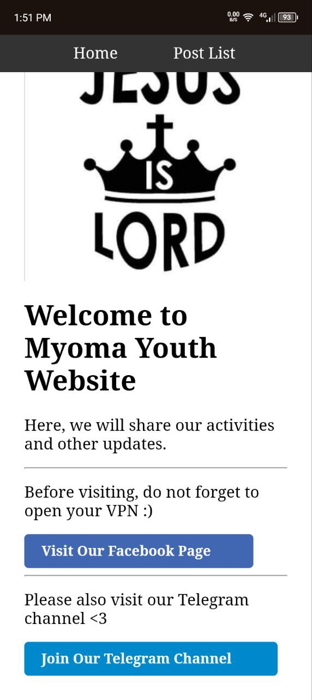
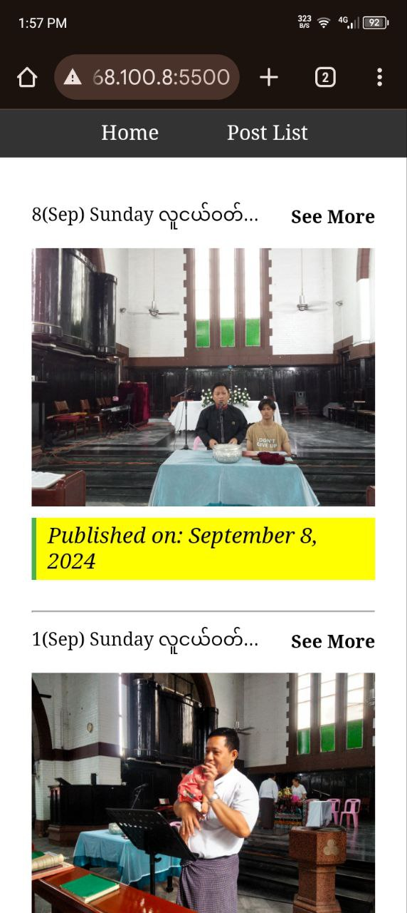
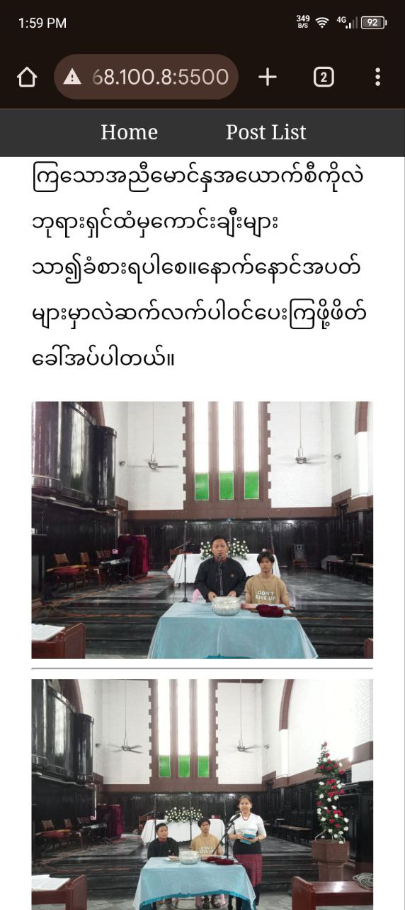

Static Website
This is a static website built solely using HTML and CSS, designed with a mobile-friendly
approach to ensure optimal usability across devices. The layout features a clear and
straightforward navigation bar, providing users with easy access to all sections of
the site. Key elements, such as the date, are prominently highlighted, enhancing
the overall user experience. With its user-centric design, the website prioritizes
simplicity and accessibility, making it easy for visitors to find the information they need.



Key Features:
- Mobile-Friendly Design: The website is fully responsive,
ensuring an optimal viewing experience on all mobile devices and screen sizes.
- User-Friendly Interface: The layout is simple and straightforward,
designed for ease of navigation and accessibility for all users, including elderly visitors.
- Color-Coded Links: Different colors are used for links throughout the site,
enhancing usability and making it easier for users to differentiate between sections.
- Prominent Navigation Bar: A navigation bar located at the
very top of the page provides quick and easy access to various
sections of the website, ensuring a smooth browsing experience.
Technologies Used:
- HTML: The structure and content of the website are built using HTML,
ensuring a clean and accessible layout.
- CSS: CSS is used to style the website, providing
a responsive design, color-coded links, and an easy-to-navigate interface.
- Static Website: As a static website, new content or posts are manually
updated by editing the HTML files directly, giving full control over the site’s layout and appearance.
See More Projects